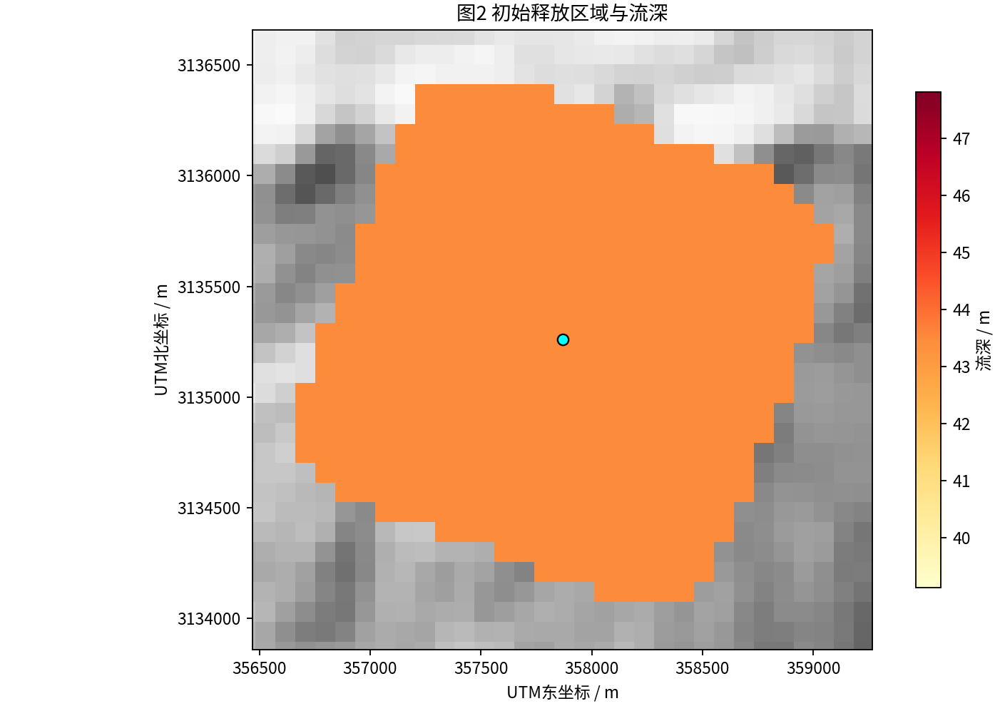
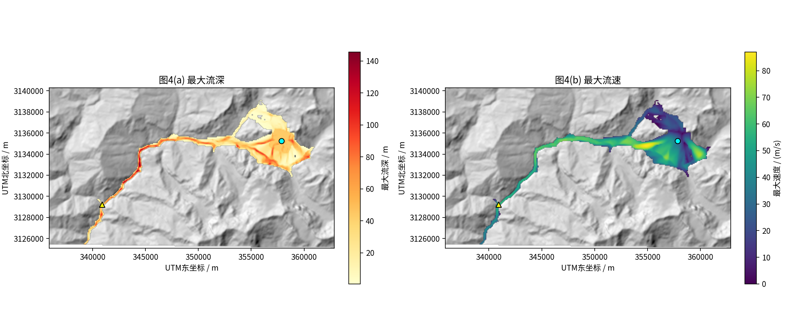
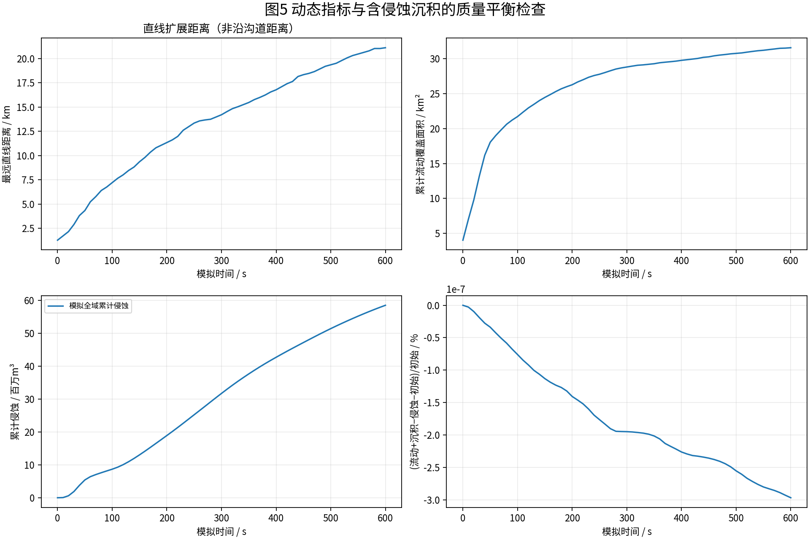
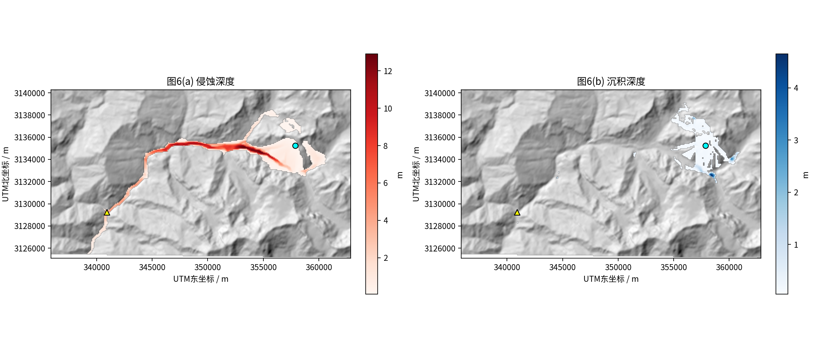

GEOSPATIAL DYNAMICS / NUMERICAL SIMULATION
吉隆口岸冰岩崩—泥石流三维动力学仿真
真实DEM地形 · 二维深度平均模型 · Voellmy摩擦阻力 · 侵蚀沉积耦合
三维场景
计算过程
空间结果
结果文件
1.75 亿 m³
初始物源体积
21.11 km
累计最大直线扩展
87.0 m/s
模拟最大流速
440 s
口岸邻域首次进入
58.5 百万 m³
累计侵蚀体积
01 三维地形与运动过程
流深随时间更新 · 鼠标控制视角
独立打开三维场景
逐帧数值阵列
02 动力学计算过程
速度 · 流深 · 侵蚀 · 沉积 · 质量收支
独立打开过程曲线
下载逐时刻CSV
03 空间分布与数值图件
平面流深 · 速度 · 侵蚀沉积
地形与空间位置

初始释放场
流深时序演化

峰值流深与速度

数值过程与守恒

侵蚀与沉积
04 模型参数与成果输出
参数与结果 JSON
最大流深 GeoTIFF
最大流速 GeoTIFF
侵蚀深度 GeoTIFF
沉积深度 GeoTIFF
项目使用说明